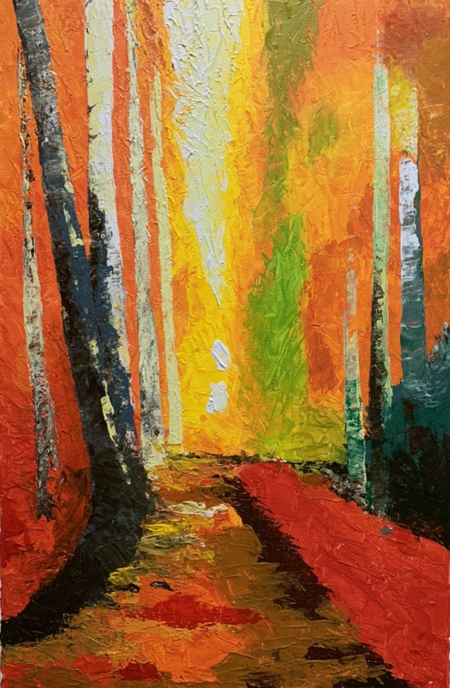

Illustrations
Stories that try to stay.
Small worlds that carry light.
Small worlds that carry light.
Taiwan Landscapes
Wind, mountains, and quiet mornings.

Nutcracker in Nürnberg
A story walking through a city of memory.

The Seed of Wind
A child, a window, and something invisible.
